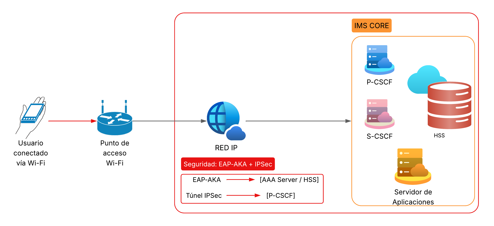

¿Qué es WLAN?
WLAN (Wireless Local Area Network), o red de área local inalámbrica, es una tecnología que permite la interconexión de dispositivos a través de ondas de radio dentro de un área limitada, como una casa, oficina o campus. Utiliza puntos de acceso (AP) para permitir la conectividad a una red IP. Es ampliamente utilizada en entornos domésticos y empresariales, y se basa en los estándares IEEE 802.11. Gracias a su naturaleza inalámbrica, WLAN facilita el acceso a internet y otros servicios sin la necesidad de cables físicos.
¿Qué es IMS?
El Subsistema Multimedia IP (IMS) es una arquitectura estandarizada por el 3GPP que permite ofrecer servicios multimedia basados en IP, como voz, video, mensajería instantánea y presencia, a través de diferentes tipos de redes de acceso. IMS proporciona control de sesiones, autenticación, calidad de servicio (QoS) y facturación unificada, todo basado en el protocolo SIP (Session Initiation Protocol). Su objetivo es integrar servicios de telecomunicaciones tradicionales con nuevas aplicaciones de internet sobre una misma plataforma de control.
Diagrama de Conexión
El diagrama muestra la conexión de un dispositivo (UE) a través de un punto de acceso WLAN hacia la red IMS. El flujo pasa por la red IP, el proxy P-CSCF, y se conecta con funciones centrales como S-CSCF, HSS y los servidores de aplicaciones, asegurando la autenticación y el establecimiento de sesiones SIP. También se representa el uso de mecanismos de seguridad como EAP-AKA e IPSec para proteger las comunicaciones.
Protocolos involucrados
- SIP (Session Initiation Protocol): Protocolo de señalización utilizado para establecer, mantener y finalizar sesiones multimedia. Es fundamental en la arquitectura IMS para el control de llamadas y servicios.
- DIAMETER: Protocolo utilizado para autenticación, autorización y contabilidad (AAA). Funciona entre las funciones IMS y el HSS, sustituyendo al antiguo RADIUS con mayor capacidad y seguridad.
- EAP-AKA: Método de autenticación basado en la tarjeta SIM del usuario. Se utiliza cuando el usuario se conecta por una red Wi-Fi y necesita autenticarse frente al núcleo IMS, garantizando identidad segura.
- IPSec: Conjunto de protocolos que garantizan la seguridad de los mensajes SIP. Cifra el tráfico entre el dispositivo del usuario (UE) y el P-CSCF, evitando accesos no autorizados.
Flujo de comunicación
- El usuario se conecta a una red WLAN mediante un punto de acceso Wi-Fi, obteniendo una dirección IP para conectarse a la red IP.
- El dispositivo inicia el proceso de autenticación usando EAP-AKA con el servidor de autenticación (AAA), el cual está vinculado al HSS en el núcleo IMS.
- Si la autenticación es exitosa, se establece un túnel seguro IPSec entre el dispositivo y el P-CSCF para proteger los mensajes de señalización.
- El usuario puede entonces iniciar sesiones SIP que son gestionadas por el S-CSCF. Este se comunica con el HSS para validar información del usuario y enruta las peticiones al servidor de aplicaciones correspondiente.
- Finalmente, el servicio solicitado (llamada, videollamada, mensajería) es habilitado por IMS y se establece la comunicación con otros usuarios o sistemas externos.
Referencias bibliográficas
- 3rd Generation Partnership Project. (2021). Technical Specification Group Core Network and Terminals; IP Multimedia Subsystem (IMS); Stage 2 (3GPP TS 23.228). https://www.3gpp.org
- Alfonsi, A. (2016). Understanding IP Multimedia Subsystem (IMS): Principles and Applications. Wiley.
- González, D. (2018). Redes Inalámbricas: Principios y Prácticas (2.ª ed.). Alfaomega.
- González, J., & Pérez, M. (2020). Seguridad en redes IP: Aplicación de IPSec y EAP-AKA. Revista Iberoamericana de Tecnologías de la Información, 12(3), 45–59.
- Johnson, D. (2019). Wireless Networks Explained (3rd ed.). Springer.
- Riegel, M., & Magedanz, T. (2015). IMS Handbook: Concepts, Architecture and Protocols. Springer.